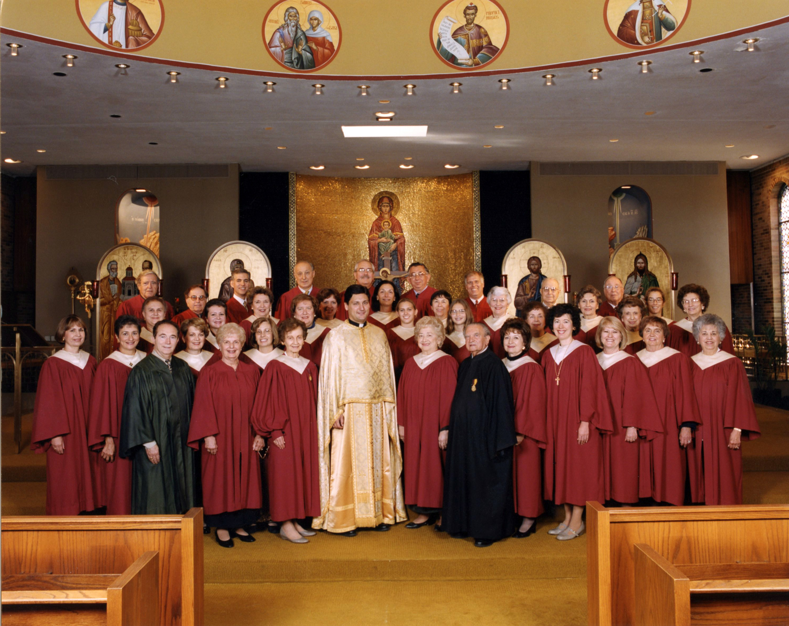

Lift your voice.
Music is how our whole parish prays together. If you love to sing, there's a place for you in our choir.
Join the choirMusic is how our whole parish prays together. If you love to sing, there's a place for you in our choir.
Join the choirRehearsals are in the choir room. On Sundays we warm up in the choir room at 8:45 AM; arrive a few minutes early to put on a robe and pick up a notebook.
Wednesday rehearsals aren't every week, and may be cancelled in bad weather.
Our choir sings the Divine Liturgy every Sunday of the year. We're not a strict program: we're a group of parishioners who love to sing, and new voices are always welcome.
Practice recordings: TBD
SSPP Choir · Divine Liturgy
Regular Wednesday rehearsals begin in September as we prepare our Christmas program.
We sing back-up for the children's Christmas Pageant (usually the 2nd or 3rd Sunday of December) and give a short concert of carols after the Christmas Eve service.
A few rehearsals to review the music for the season ahead.
No Wednesday rehearsals. Instead we sing at the Pre-Sanctified Liturgy on Wednesday evenings and the Salutations on Friday evenings.
We sing at every evening service except Holy Wednesday.
No regular weekly rehearsals.
Can't make every service? That's okay. Come when you can.
“We know you're out there; we hear you singing and you sound great! Please don't be commitment-phobic. If you're already in church, why not sing too?”
Therese Speropoulos, Choir Director
Our chanters lead the hymns of Orthros and the Divine Liturgy from the chanter's stand.
Interested in learning to chant? TBD: how to learn (mentoring/classes)
Email Chris
Therese Speropoulos, Choir Director
Chris Atsaves, Chanter